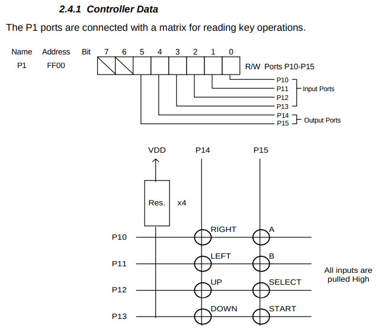
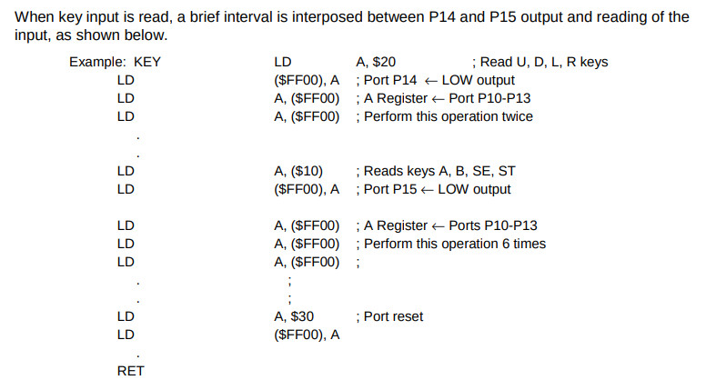
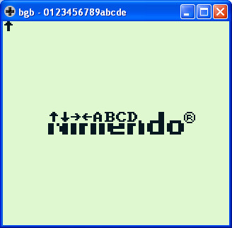

參考資訊：
https://bgb.bircd.org/
https://github.com/gbdev/rgbds
https://github.com/sinamas/gambatte
https://github.com/lancekindle/DMGreport
電路圖


IE equ $ffff
IEF_VBLANK equ %00000001
LCDC equ $ff40
LCDCF_OBJ8 equ %00000000
LCDCF_OBJON equ %00000010
LCDCF_ON equ %10000000
STAT equ $ff41
STATF_BUSY equ %00000010
P1 equ $ff00
P1_BUTTONS equ %00100000
P1_ARROWS equ %00010000
P1_DOWN equ $80
P1_UP equ $40
P1_LEFT equ $20
P1_RIGHT equ $10
P1_START equ $08
P1_SELECT equ $04
P1_B equ $02
P1_A equ $01
section "vblank", rom0[$0040]
reti
section "lcdc", rom0[$0048]
reti
section "timer", rom0[$0050]
reti
section "serial", rom0[$0058]
reti
section "joypad", rom0[$0060]
reti
section "entry", rom0[$0100]
nop
jp _start
section "header", rom0[$0104]
db $ce, $ed, $66, $66, $cc, $0d, $00, $0b, $03, $73, $00, $83, $00, $0c, $00, $0d
db $00, $08, $11, $1f, $88, $89, $00, $0e, $dc, $cc, $6e, $e6, $dd, $dd, $d9, $99
db $bb, $bb, $67, $63, $6e, $0e, $ec, $cc, $dd, $dc, $99, $9f, $bb, $b9, $33, $3e
db "0123456789abcde"
db 0
db 0, 0
db 0
db 0
db 0
db 0
db 1
db $33
db 0
db 0
dw 0
_start:
di
ld sp, $ffff
ld a, IEF_VBLANK
ld [IE], a
ei
halt
halt
ld a, [LCDC]
and ~LCDCF_ON
ld [LCDC], a
ld d, (8 * 9)
ld bc, tile
ld hl, $8000
copy_tile:
ld a, [bc]
ld [hl+], a
ld [hl+], a
inc bc
dec d
jr nz, copy_tile
ld a, [LCDC]
or LCDCF_ON
ld [LCDC], a
loop:
halt
nop
call get_key
ld a, b
and P1_UP
jr nz, draw_up
ld a, b
and P1_DOWN
jr nz, draw_down
ld a, b
and P1_LEFT
jr nz, draw_left
ld a, b
and P1_RIGHT
jr nz, draw_right
ld a, b
and P1_A
jr nz, draw_a
ld a, b
and P1_B
jr nz, draw_b
ld a, b
and P1_SELECT
jr nz, draw_select
ld a, b
and P1_START
jr nz, draw_start
jp loop
draw_up:
ld a, 1
jr next
draw_down:
ld a, 2
jr next
draw_left:
ld a, 4
jr next
draw_right:
ld a, 3
jr next
draw_a:
ld a, 5
jr next
draw_b:
ld a, 6
jr next
draw_select:
ld a, 7
jr next
draw_start:
ld a, 8
jr next
next:
call draw
jp loop
draw:
ld b, a
ld hl, $9800
ldh a, [STAT]
and STATF_BUSY
jr nz, @-4
ld a, b
ld [hl+], a
ret
get_key:
ld a, P1_BUTTONS
ld [P1], a
ld a, [P1]
ld a, [P1]
cpl
and $0f
swap a
ld b, a
ld a, P1_ARROWS
ld [P1], a
ld a, [P1]
ld a, [P1]
ld a, [P1]
ld a, [P1]
ld a, [P1]
ld a, [P1]
cpl
and $0f
or b
ld b, a
ld a, P1_BUTTONS | P1_ARROWS
ld [P1], a
ld a, b
ret
tile:
db %00000000
db %00000000
db %00000000
db %00000000
db %00000000
db %00000000
db %00000000
db %00000000
db %00011000
db %00111100
db %01111110
db %00011000
db %00011000
db %00011000
db %00011000
db %00000000
db %00011000
db %00011000
db %00011000
db %00011000
db %01111110
db %00111100
db %00011000
db %00000000
db %00000000
db %00011000
db %00001100
db %11111110
db %00001100
db %00011000
db %00000000
db %00000000
db %00000000
db %00110000
db %01100000
db %11111110
db %01100000
db %00110000
db %00000000
db %00000000
db %00110000
db %01111000
db %11001100
db %11001100
db %11111100
db %11001100
db %11001100
db %00000000
db %11111100
db %01100110
db %01100110
db %01111100
db %01100110
db %01100110
db %11111100
db %00000000
db %00111100
db %01100110
db %11000000
db %11000000
db %11000000
db %01100110
db %00111100
db %00000000
db %11111000
db %01101100
db %01100110
db %01100110
db %01100110
db %01101100
db %11111000
db %00000000
完成
